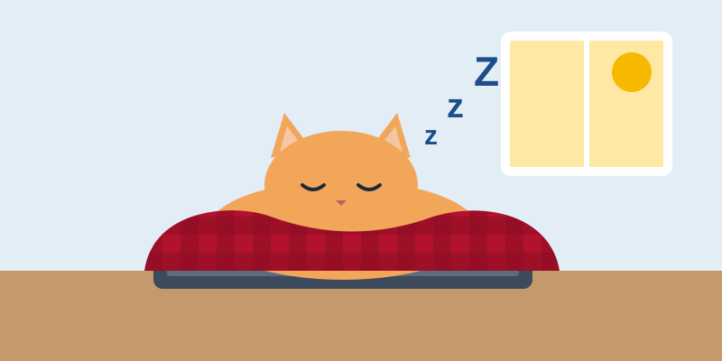
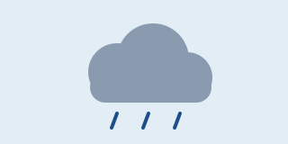

Modo invierno
Guía de supervivencia para quienes trabajan desde casa, donde fuera brilla el sol y dentro hace 15 °C.

Últimas investigaciones
-
Gran ranking de mantas para teletrabajar
Probamos 4 mantas para que tú no tengas que levantarte.
-

¿Bajón invernal o simplemente lunes?Un test sin ninguna base científica en 5 señales.
¿Te quedan dudas? A nosotros también. Escríbenos